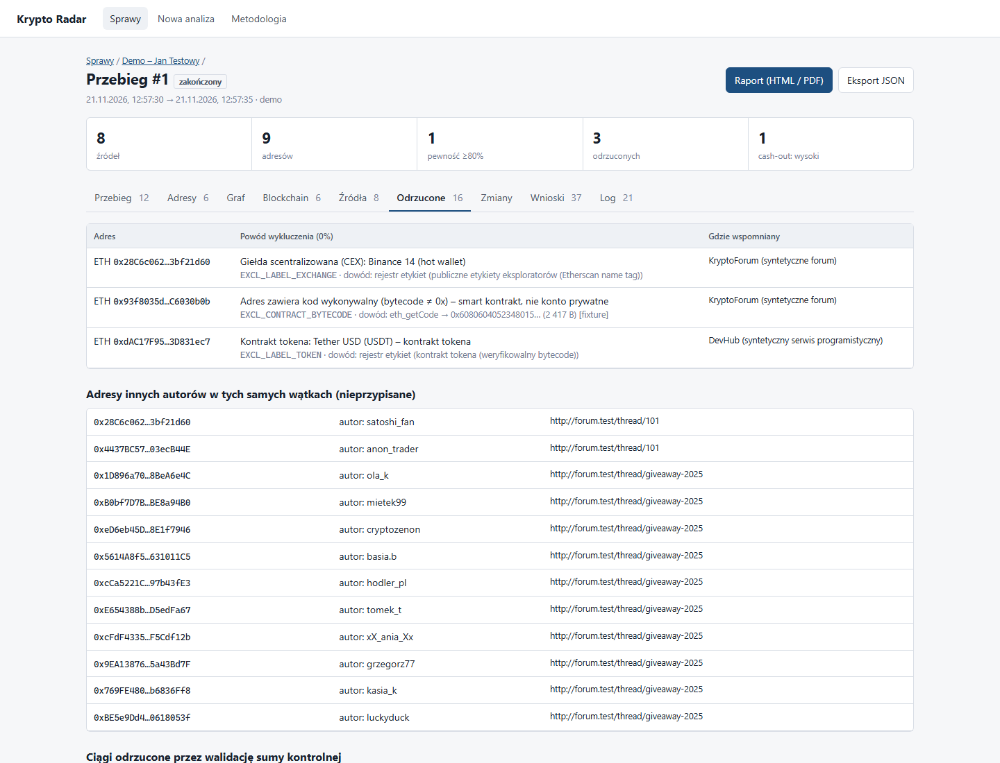
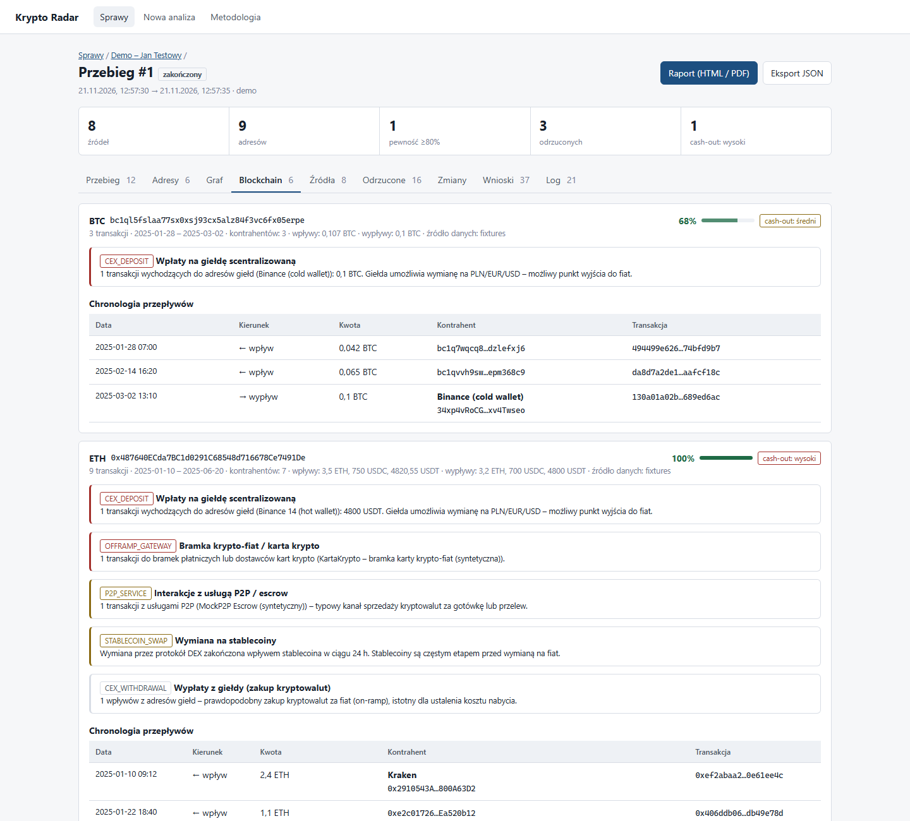
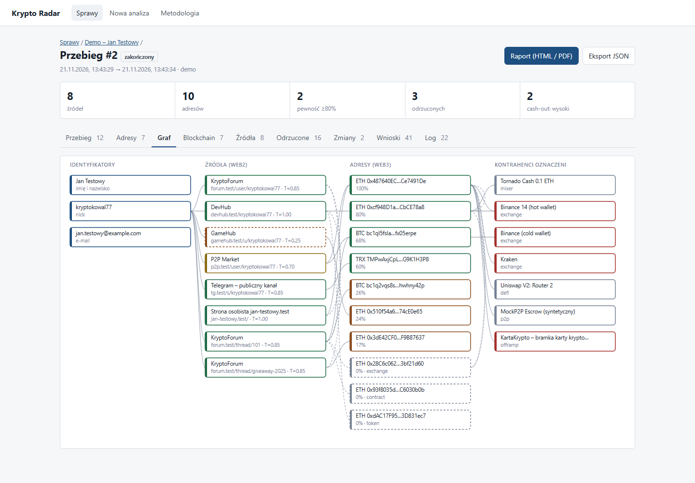

Łączy publiczne ślady cyfrowe osoby z adresami kryptowalutowymi, liczy jawny Wskaźnik Pewności i wskazuje sygnały wymiany krypto na fiat.
Adres portfela trafia do bio na GitHubie, ogłoszenia P2P albo wątku na forum. Przychód ze sprzedaży krypto nie trafia do PIT-38.
Tryb demo (syntetyczne źródła, offline) lub live (prawdziwy internet) wybierany przy każdej sprawie. Analizy cykliczne według harmonogramu.
| Wejście | Co robimy |
|---|---|
| Nick | Maigret: GitHub, GitLab, Keybase, HN, Telegram, Reddit · bez rekurencji · timeout 15 s |
| Imię i nazwisko | "Imię Nazwisko" oraz wariant z bitcoin OR ethereum OR USDT OR portfel… |
"e-mail" · część lokalna jako dodatkowy nick | |
| Komunikator | jak nick + potwierdzenie tożsamości na stronach |
| URL profilu | pobierany wprost, T = 1.0 |
| Adres krypto | walidacja, etykiety, on-chain, wyszukiwanie adresu |
| Limit / reguła | Wartość |
|---|---|
| Filtr trafności | wszystkie słowa identyfikatora w URL, tytule lub opisie |
| Strony na przebieg | 40 · głębokość 2 |
| Tempo | 300 ms na host · po HTTP 429 host pomijany |
| Linki | tylko znane serwisy, bez nawigacji; w serwisie tylko wątki lub URL z nickiem |
| Za logowaniem | Instagram, Facebook, X, LinkedIn – pomijane |
| Sieć | allowlista · adresy prywatne zawsze blokowane |
| Źródło | Baza |
|---|---|
| Własny profil | 90 |
| Strona osobista | 85 |
| Ogłoszenie P2P | 70 |
| Komunikator – rozliczenie | 65 |
| Forum | 50 |
| Giveaway | 20 |
| Giełda · kontrakt · mikser · zbiórka | 0 |
| T – czy źródło należy do osoby | |
|---|---|
| URL od analityka | 1.0 |
| Link z profilu osoby | ≤0.85 |
| Ten sam nick | 0.6 |
| Imię / e-mail / komunikator na stronie | +0.15 |
| Nick pospolity | −0.2 |
| Inne imię i nazwisko na profilu | −0.35 |
| Kontekst zdania: „mój portfel” / „adres giełdy” | +5 / −25 |

CEX_DEPOSIT | wpłata na giełdę |
OFFRAMP_GATEWAY | bramka / karta krypto |
P2P_SERVICE | escrow P2P |
STABLECOIN_SWAP | DEX → USDT w 24 h |
MIXER | mikser |
CEX_WITHDRAWAL | zakup na giełdzie |
| Każdy wskaźnik wskazuje transakcje. Dane: Blockscout (ETH + ERC-20), mempool.space (BTC) – oba do samodzielnego hostowania. | |


scenariusz akceptacyjny end-to-end na danych syntetycznych
testów jednostkowych: adresy, punktacja, tożsamość, cash-out, SSRF
polecenie: docker compose up -d --build
ChainProvider.